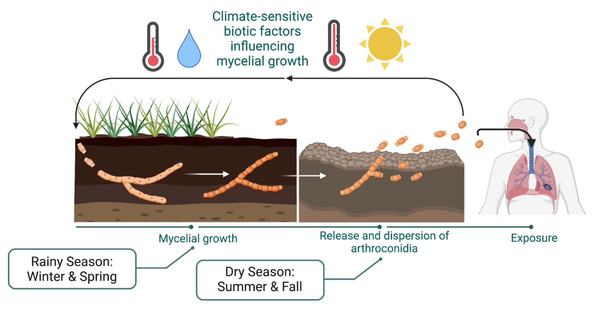

Predicted Cases
— forecast yearABOUT
By Simon Camponuri
1 July 2026
What is CocciCast?
Coccidioidomycosis, commonly known as Valley fever or “cocci,” is an emerging fungal disease caused by inhaling airborne spores of Coccidioides, a soil-dwelling fungus found in parts of the western United States. Infection most often causes a respiratory illness, but symptoms can persist for months and, in some cases, lead to severe or disseminated disease.
Valley fever has increased substantially in California over the past two decades, with recent growth extending beyond historically high-incidence areas in the southern San Joaquin Valley.[1] A growing body of evidence suggests that climate variability plays an important role in Valley fever epidemiology. Wet winter seasons and hot, dry summers have been found to increase incidence in the fall, likely because moisture promotes fungal growth during the winter and soil drying during the summer facilitates dust generation and spore dispersal, leading to subsequent infections.[2] Inter-annual fluctuations in drought conditions have also been linked to Valley fever incidence, with drought conditions suppressing concurrent incidence but exacerbating it once the rains return, possibly due to impacts on Coccidioides soil competitors or rodent host populations.[2]

In partnership with the California Department of Public Health, our team developed this ensemble forecasting model to translate these climate-disease relationships into actionable information.[3] By combining reported Valley fever cases with climate data, the model estimates when and where incidence is likely to rise in California in the coming 12 months. Our hope is that these forecasts can help public health agencies, clinicians, and communities anticipate periods of elevated risk, strengthen public messaging, and support earlier diagnosis of Valley fever among patients.
For more information on the relationship between climate and Valley fever, see Head et al. 2022 and Camponuri et al. 2025.
About the forecast
To develop a predictive algorithm for generating short-term Valley fever forecasts, we used an ensemble modeling approach published here[2] and here[3]. We generated five candidate prediction algorithms with increasing levels of complexity: four generalized linear models with varying interactions and covariates, and one random forest model (see below). Eligible predictors included season, year, soil texture, elevation, percent impervious surface, 36-month lagged total monthly precipitation, and 36-month lagged mean temperature. We then examined how each candidate algorithm performed when used to generate out-of-sample predictions by using a 12-fold progressive time-series cross validation approach to determine the out-of-sample future prediction error of each model, examining model performance in the 12 months after the training data. Ensemble forecasts were weighted averages of individual model forecasts, with weights proportional to the inverse of their out-of-sample prediction error. We fit separate ensemble models for each county (for highly endemic regions) or region (for low to moderately endemic regions) in California relating monthly reported cases per census tract to climatological or environmental predictors.
Models:
- Long-term and seasonal trends only.
- Long-term and seasonal trends, plus environmental variables (soil type, impervious surface, elevation) and lagged temperature and precipitation.
- Long-term and seasonal trends, environmental variables (soil type, impervious surface, elevation), lagged temperature and precipitation, and interactions between post-drought indicators and lagged temperature and precipitation.
- Long-term and seasonal trends, environmental variables (soil type, impervious surface, elevation), lagged temperature and precipitation, interactions between season and post-drought indicators, and interactions between season and lagged temperature and precipitation.
- Random forest model with season, environmental variables (soil type, impervious surface, elevation), lagged temperature and precipitation, and post-drought indicators.
To forecast Valley fever cases, we applied each model to temperature and precipitation data during the observed period, and extrapolated temperature and precipitation data 12 months into the future. Future temperature estimates beyond the observed period were generated by extrapolating historical monthly temperature averages in each census tract using a linear trend from 1981–present. Future precipitation estimates were generated by setting precipitation in each census tract to the observed values during the 50th percentile of the annual cumulative precipitation distribution (from 1981–present).
To quantify uncertainty in our forecasts, we generated 50% and 90% empirical prediction intervals. In brief, we first used a leave-future-year cross-validation procedure to generate a distribution of out-of-sample forecast residuals, calculated as the difference between the observed and predicted number of cases. We then used the empirical quantiles of these residuals to calibrate prediction intervals around each forecast: the 25th and 75th percentiles of the residual distribution were added to forecasts to construct the 50% prediction interval, and the 5th and 95th percentiles were used to construct the 90% prediction interval. Lower bounds below zero were truncated at zero. This approach produces asymmetric, calibrated intervals that reflect the model’s historical out-of-sample forecast performance, without assuming a symmetric or normally distributed error structure.
References
- Sondermeyer Cooksey GL, Nguyen A, Vugia D, Jain S. Regional Analysis of Coccidioidomycosis Incidence — California, 2000–2018. Morbidity and Mortality Weekly Report 2020;69(48):1817–21. doi:10.15585/mmwr.mm6948a4
- Head JR, Sondermeyer-Cooksey G, Heaney AK, et al. Effects of precipitation, heat, and drought on incidence and expansion of coccidioidomycosis in western USA: a longitudinal surveillance study. The Lancet Planetary Health 2022;6(10):e793–e803. doi:10.1016/S2542-5196(22)00202-9
- Camponuri SK, Heaney AK, Cooksey GS, et al. Recent and Forecasted Increases in Coccidioidomycosis Incidence Linked to Hydroclimatic Swings, California, USA. Emerg Infect Dis 2025;31(5):1028–32. doi:10.3201/eid3105.241338
Legend
STATEWIDE SUMMARY
Observed vs. Forecasted Cases
Observed Ensemble Forecast 95% Range
Avg. incidence
— per 100kElevated counties
— rising vs. prior year